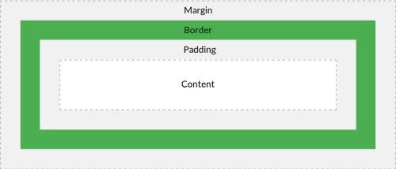

The CSS Box Model
All HTML elements can be considered as boxes. In CSS, the term "box model" is used when talking about design and layout.
The CSS box model is essentially a box that wraps around every HTML element. It consists of: margins, borders, padding, and the actual content. The image below illustrates the box model:
The box model allows us to add a border around elements, and to define space between elements.
Explanation of the different parts:
Content - The content of the box, where text and images appear
Padding - Clears an area around the content. The padding is transparent
Border - A border that goes around the padding and content
Margin - Clears an area outside the border. The margin is transparent
div {
background-color: lightgrey;
width: 300px;
border: 15px solid green;
padding: 50px;
margin: 20px;
}
Margins
Margins create extra space around an element. In contrast, padding creates extra space within an element. The margin property may be specified using one, two, three, or four values. Each value is a
Values
<length>: The size of the margin as a fixed value.
<percentage>: The size of the margin as a percentage, relative to the width of the containing block.
auto: The browser selects a suitable margin to use. For example, in certain cases this value can be used to center an element.
margin: 5%; /* All sides: 5% margin */
margin: 10px; /* All sides: 10px margin */
margin: 1.6em 20px; /* top and bottom: 1.6em margin */
/* left and right: 20px margin */
margin: 10px 3% -1em; /* top: 10px margin */
/* left and right: 3% margin */
/* bottom: -1em margin */
margin: 10px 3px 30px 5px; /* top: 10px margin */
/* right: 3px margin */
/* bottom: 30px margin */
/* left: 5px margin */
margin: 2em auto; /* top and bottom: 2em margin */
/* Box is horizontally centered */
margin: auto; /* top and bottom: 0 margin */
/* Box is horizontally centered */